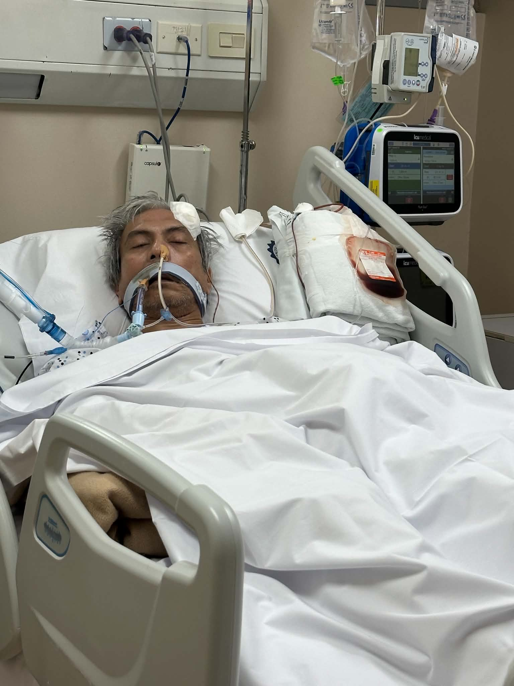

Bank Transfer
Via any bank or InstaPay/PESONet
- Bank
- Bank of the Philippine Islands (BPI)
- Account name
- Darla Aguinaldo
- Account number
- 391 920 556 2
Medical Fundraising Case File · Opened September 2026
Critical — updated September 11, 2026
On August 15, 2026, Jose suffered a sudden stroke and was transferred to St. Luke's Medical Center – Global City, where he underwent emergency surgery for bleeding in the brain. He remains in the Neuro Critical Care Unit in a vegetative state, requiring continuous, specialized care.
St. Luke's has the doctors, equipment, and specialists his condition needs, and it is where we would most want him to stay. Regrettably, our family is no longer able to sustain the cost of his care there on our own. We humbly ask for your help — whether to allow his treatment to continue at St. Luke's, or to safely move him to a public hospital where his care can carry on. Any support you're able to give, in whatever form or amount, would mean more than we can express. And if a prayer for his recovery is all you're able to offer, please know it is received with the same deep gratitude. Thank you for taking the time to read this, and for any kindness you extend to him and to our family.

Jose's photo, with the family's permission
01 · Story
On August 15, 2026, Jose suffered a sudden stroke. He was rushed to Taguig General Hospital, the nearest public hospital, where a CT scan found bleeding in his brain that needed urgent, specialized care. No neurologist or neurosurgeon was available there to treat him, and the family's search for a public hospital with a brain specialist on hand turned up nothing. On the emergency room doctor's advice, they turned to private hospitals instead.
St. Luke's Medical Center – Global City was the nearest hospital with specialists able to take him. It took roughly seven to eight hours to coordinate the transfer — and during that wait, the bleeding worsened, causing hydrocephalus and dangerously high pressure in his brain. He underwent an emergency procedure to relieve the pressure and drain the fluid, and has remained in the Neuro Critical Care Unit ever since.
Jose is the family's primary breadwinner. His hospital bill has already passed ₱2,973,000 — not including doctors' professional fees — and continues to grow by roughly ₱110,000 a day. The family reached out to the hospital's in-house collection/billing and social services, who directed them to seek help from government agencies — the hospital still needs to be paid in full to keep operating, so the bill isn't something that can be reduced or waived. The family is now asking directly for help so his treatment isn't interrupted.
“Our only wish is for him to get another chance to keep fighting. We pray that he wakes up — that we can talk to him again, hear his voice, and be a family together again.” — Darla Aguinaldo, daughter
02 · Verification
If you'd like to visit him or pray for him in person, here are the details below. To confirm his confinement, you're welcome to check with the admitting area in the hospital's main building.
03 · Updates
Dated notes from the family, and supporting documents from the hospital.
Jose suffers a sudden, severe stroke — a right thalamic intracerebral hemorrhage with extension into the ventricles — and is rushed to Taguig General Hospital. A CT scan confirms the bleed, but no neurologist or neurosurgeon is available on-site to manage his condition. After roughly seven to eight hours coordinating an emergency transfer, he's brought to St. Luke's Medical Center – Global City, one of the nearest hospitals with specialists able to treat him. While awaiting definitive care, the hemorrhage progresses and he develops acute hydrocephalus — a dangerous buildup of fluid in the brain. He undergoes emergency neurosurgery to relieve the intracranial pressure, including placement of an external ventricular drain (EVD) to continuously drain the excess cerebrospinal fluid. Following surgery, he's transferred to the Neuro Critical Care Unit (NCCU) for close monitoring.
Cerebral edema — swelling of the brain tissue surrounding the hemorrhage — begins to set in. This is an expected progression doctors had anticipated, and one they continue to monitor closely.
The family notices unexpected swelling on the left side of his face — the side opposite from where the bleeding occurred — prompting doctors to run further diagnostic tests. Around the same time, he also develops a fever.
Jose develops pneumonia, a lung infection common in patients on prolonged ventilator support, and his fever becomes recurring.
With the fever and pneumonia continuing on and off, and having already passed the generally accepted 14–21 day safety window for staying on a mouth (oral) ventilator, doctors perform a tracheostomy — a surgical airway placed directly into the windpipe — to protect his airway and support his continued ventilation.
The tracheostomy is now fully in place, and Jose is breathing through the opening in his neck instead of through his mouth.
Jose begins breathing independently through the tracheostomy. He then develops diarrhea followed by significant rectal bleeding, and doctors begin closely monitoring his blood pressure, blood counts, and overall condition to track how much blood he's losing and whether the bleeding will continue.
Because the gastrointestinal bleeding continues, Jose undergoes both an upper endoscopy and a colonoscopy to locate its source and determine the right course of treatment.
Doctors perform a procedure to control the bleeding from the affected blood vessel, closing it off to stop further blood loss. Jose is monitored closely afterward to see whether the bleeding has been brought under control.
Jose is kept fasting while doctors continue watching closely for any sign the bleeding is returning, particularly further blood in his stool.
Despite the monitoring, Jose loses a significant amount of blood. Blood tests also show a buildup of toxic waste products his kidneys are no longer clearing adequately, and he undergoes roughly six hours of dialysis to remove the accumulated toxins and support his body through this critical stretch.
Jose remains fasting through September 10 as doctors continue watching closely for any recurrence of the gastrointestinal bleeding before deciding on next steps.
The bleeding returns, and Jose loses further blood; he undergoes another blood transfusion to replace it and stabilize his condition. Doctors trace the bleeding to a rectal ulcer and an affected blood vessel, and since it has continued despite previous interventions, he is now expected to undergo surgery to stop the vessel from bleeding. He remains in critical condition, continuing to need intensive care, close monitoring, blood replacement, and further procedures to bring the bleeding under control.
04 · How to Help
Every peso goes directly toward hospital bills. Pick whichever is easiest.
Verify before you send: this is the only official page for Toto's medical fund, at https://github.com/EngrX/help-for-toto. If you see this page copied elsewhere, or with different account details, please verify with us directly at the contact below before sending anything.
Via any bank or InstaPay/PESONet
Scan in the GCash app, or send to this number
Scan in the Maya app, or send to this number
Any amount we receive through the accounts above will be reflected in the total raised.
Another way to help
If a donation isn't the easiest option for you right now, here's another way to help — I run a small Etsy shop selling digital art I've made myself. Everything in the shop is currently discounted, and any purchase helps just as much as a direct donation would. If you've never used Etsy before, it's simple: browse, add to cart, and check out like any online store.
Visit my Etsy shop →